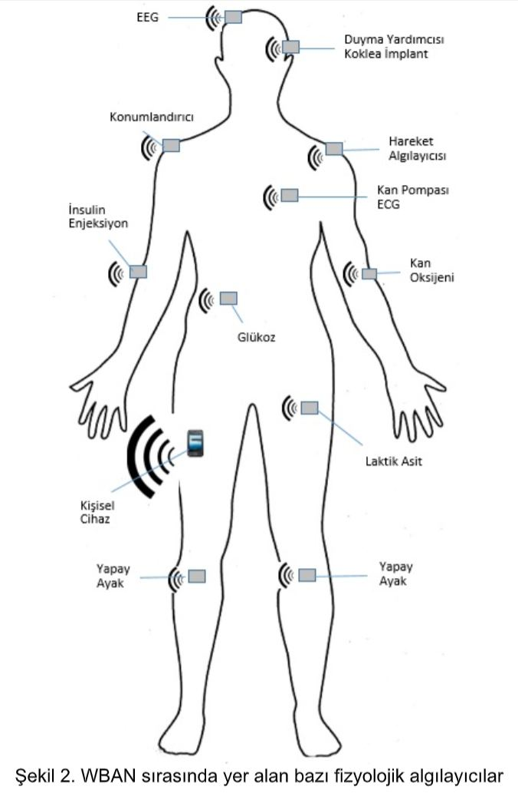
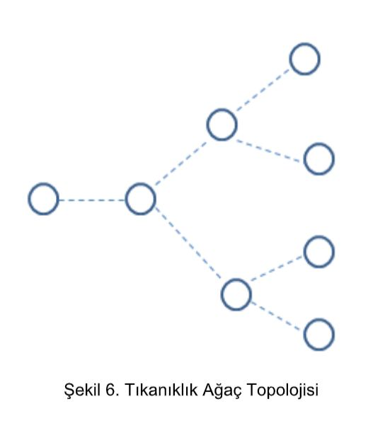
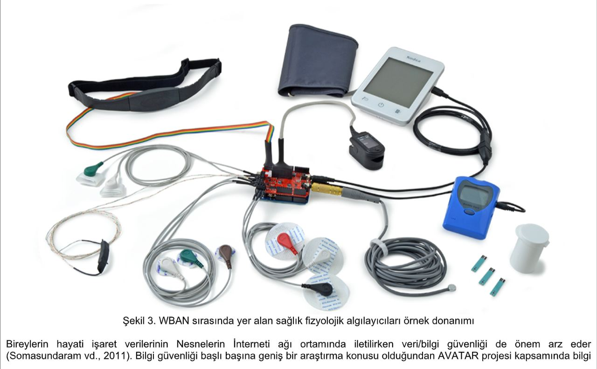
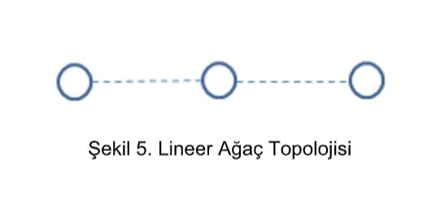
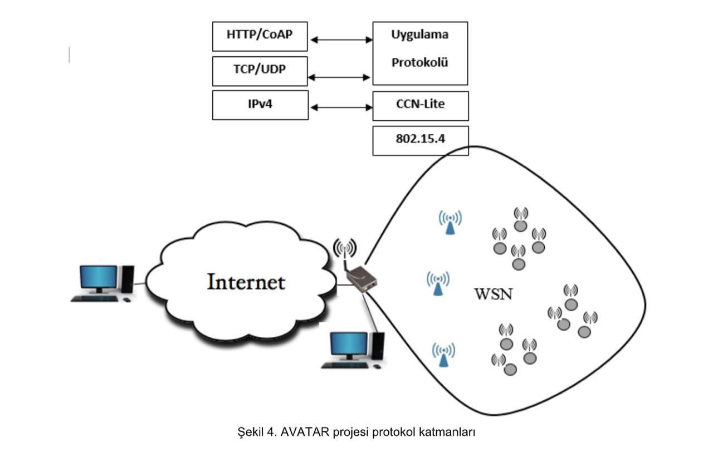

AVATAR.
Anasayfa
Özet
Amaç ve Hedefler
Konu,Kapsam ve
Literatür Özeti
Kişiler
Yayınlar
AVATAR
Uzaktan Sağlık Hizmetleri için Bilgi Merkezli Nesnelerin İnterneti Ağ Mimarisi ve Protokolleri
WBAN sırasında yer alan bazı fizyolojik algılayıcılar

AVATAR projesi ağ mimarisi



AVATAR projesi protokol katmanları
